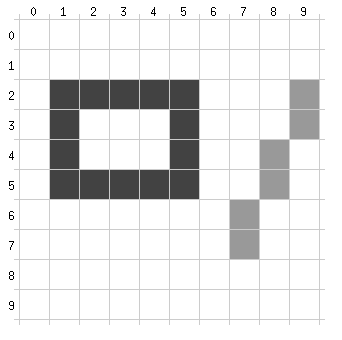

| Home · All Classes · Main Classes · Annotated · Grouped Classes · Functions |
A paint device in Qt is a drawable 2D surface. QWidget, QPixmap, QPicture, and QPrinter are all paint devices. A QPainter is an object which can draw on such devices.
The default coordinate system of a paint device has its origin at the top-left corner. The x values increase to the right and the y values increase downwards. The default unit is one pixel on pixel-based devices and one point (1/72 of an inch) on printers.
The illustration below shows a highly magnified portion of the top left corner of a paint device.

The rectangle and the line were drawn by this code (with the grid added and colors touched up in the illustration):
void MyWidget::paintEvent(QPaintEvent *)
{
QPainter painter(this);
painter.setPen(Qt::darkGray);
painter.drawRect(1, 2, 4, 3);
painter.setPen(Qt::lightGray);
painter.drawLine(9, 2, 7, 7);
}
Note that although we specify 4 x 3 to QPainter::drawRect() as the size, the actual rectangle ends up emcompassing 5 x 4 pixels. This is in line with what most modern graphic APIs do.
The size you specify is the size of the mathematical rectangle, without considering the pen width. This makes sense when you apply transformations (scaling, shearing, etc.). This applies to all the relevant functions in QPainter (e.g., drawRoundRect(), drawEllipse()).
The QPainter::drawLine() call draws both end points of the line, not just one.
Here are the classes that relate most closely to the coordinate system. Some classes exist in two versions: an int-based version and a qreal-based version. For these, the qreal version's name is suffixed with an F.
| Class | Description |
|---|---|
| QPoint(F) | A single 2D point in the coordinate system. Most functions in Qt that deal with points can accept either a QPoint, a QPointF, two ints, or two qreals. |
| QSize(F) | A single 2D vector. Internally, QPoint and QSize are the same, but a point is not the same as a size, so both classes exist. Again, most functions accept either QSizeF, a QSize, two ints, or two qreals. |
| QRect(F) | A 2D rectangle. Most functions accept either a QRectF, a QRect, four ints, or four qreals. |
| QLine(F) | A 2D finite-length line, characterized by a start point and an end point. |
| QPolygon({QPolygonF}{F}) | A 2D polygon. A polygon is a vector of QPoint(F)s. If the first and last points are the same, the polygon is closed. |
| QPaintDevice | A device on which you can paint. There are several devices already in Qt (widgets, pixmaps, images, painter) and other devices can be defined also. |
| QPainter | The class that paints. It can paint on any device with the same code. There are differences between devices, QPrinter::newPage() is a good example, but QPainter works the same way on all devices. |
| QMatrix | A 3 x 3 transformation matrix. Use QMatrix to rotate, shear, scale, or translate the coordinate system. |
| QPainterPath | A vectorial specification of a 2D shape. Painter paths are the ultimate painting primitive, in the sense that any shape (rectange, ellipse, spline) or combination of shapes can be expressed as a path. A path specifies both an outline and an area. |
| QPaintEngine | The base class for painter backends. Qt includes several backends. You normally don't need to use this class directly. |
| QRegion | An area in a paint device, expressed as a list of QRects. In general, we recommend using the vectorial QPainterPath class instead of QRegion for specifying areas, because QPainterPath handles painter transformations much better. |
Qt's default coordinate system works as described above, with (0, 0) at the top-left. QPainter also supports arbitrary transformations, through its transformation matrix. Use this matrix to orient and position your objects in your model. Qt provides methods such as QPainter::rotate(), QPainter::scale(), QPainter::translate() and so on to operate on this matrix.
QPainter::save() and QPainter::restore() save and restore this matrix. You can also use QMatrix objects, QPainter::matrix() and QPainter::setMatrix() if you need the same transformations over and over.
One frequent need for the transformation matrix is when reusing the same drawing code on a variety of paint devices. Without transformations, the results are tightly bound to the resolution of the paint device. Printers have typically 600 dots per inch, whereas screens often have between 75 and 100 dots per inch.
Here is a short example that uses the matrix to draw the clock face in the widgets/analogclock example. We recommend compiling and running the example before you read any further. In particular, try resizing the window to different sizes.
void AnalogClock::paintEvent(QPaintEvent *)
{
static const int hourHand[6] = { 7, 8, -7, 8, 0, -40 };
static const int minuteHand[6] = { 7, 8, -7, 8, 0, -70 };
QColor hourColor(127, 0, 127);
QColor minuteColor(0, 127, 127, 191);
int side = qMin(width(), height());
QTime time = QTime::currentTime();
QPainter painter(this);
painter.setRenderHint(QPainter::Antialiasing);
painter.translate(width() / 2, height() / 2);
painter.scale(side / 200.0, side / 200.0);
First, we set up the painter. We translate the coordinate system so that point (0, 0) is in the widget's center, instead of being at the top-left corner. We also scale the system by side / 100, where side is either the widget's width or the height, whichever is shortest. We want the clock to be square, even if the device isn't.
This will give us a 100 x 100 square area with point (0, 0) in the middle that we can draw on. What we draw will show up in the largest possible square that will fit in the widget.
painter.save();
painter.rotate(30.0 * ((time.hour() + time.minute() / 60.0)));
painter.drawConvexPolygon(QPolygon(3, hourHand));
painter.restore();
We draw the clock's hour hand by rotating the coordinate system and calling QPainter::drawConvexPolygon(). Thank's to the rotation, it's drawn pointed in the right direction.
The polygon is specified as an array of alternating x, y values, stored in the hourHand static variable (defined at the beginning of the function), which corresponds to the four points (2, 0), (0, 2), (-2, 0), and (0, -25).
The calls to QPainter::save() and QPainter::restore() surrounding the code guarantees that the code that follows won't be disturbed by the transformations we've used.
painter.save();
painter.rotate(6.0 * (time.minute() + time.second() / 60.0));
painter.drawConvexPolygon(QPolygon(3, minuteHand));
painter.restore();
We do the same for the clock's minute hand, which is defined by the four points (1, 0), (0, 1), (-1, 0), and (0, -40). These coordinates specify a hand that is thinner and longer than the minute hand.
for (int j = 0; j < 60; ++j) {
if ((j % 5) != 0)
painter.drawLine(92, 0, 96, 0);
painter.rotate(6.0);
}
Finally, we draw the clock face, which consists of twelve short lines at 30-degree intervals. At the end of that, the painter is rotated in a way which isn't very useful, but we're done with painting so that doesn't matter.
| Copyright © 2005 Trolltech | Trademarks | Qt 4.0.0 |